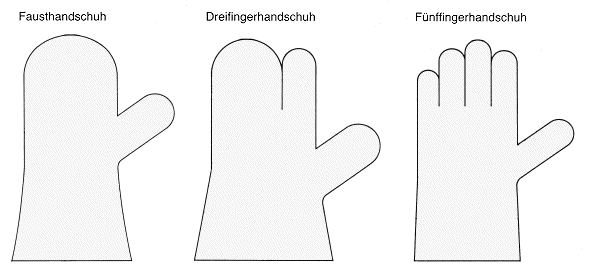
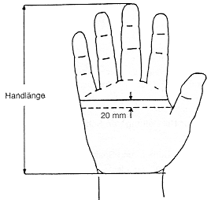

4.3 Ausführungsbeispiele
4.3.1 Handschuhformen
Es gibt drei Handschuhformen: Faust-, Dreifinger- und Fünffingerhandschuhe; siehe Abbildung 1.

Abb. 1: Handschuhformen
4.3.2 Handschuhgrößen
4.3.2.1 Größen und Maße der Hand
Die Abmessungen der Hand werden bestimmt durch:

Abb. 2: Bestimmung der Maße für Umfang und Länge
Folgende Handgrößen sind festgelegt:
| Handgröße |
6 |
7 |
8 |
9 |
10 |
11 |
| Handumfang (mm) |
152 |
178 |
203 |
229 |
254 |
279 |
| Handlänge (mm) |
160 |
171 |
182 |
192 |
204 |
215 |
Tabelle 1: Handgrößen
Halbe Größen können durch Interpolation zwischen den vollen Größen ermittelt werden.
4.3.2.2 Größen und Maße der Handschuhe
Zu den sechs Handgrößen sind die dazugehörenden Handschuhgrößen festgelegt:
|
Handschuhgröße |
passend für Handgröße |
Mindestlänge |
|
6 |
6 |
220 mm |
|
7 |
7 |
230 mm |
|
8 |
8 |
240 mm |
|
9 |
9 |
250 mm |
|
10 |
10 |
260 mm |
|
11 |
11 |
270 mm |
Tabelle 2: Handschuhgrößen
Handschuhgrößen für den medizinischen Einmalhandschuh siehe DIN EN 455 „Medizinische Handschuhe zum einmaligen Gebrauch“.